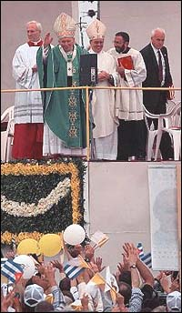

Article by Steve Fainaro,
Boston Globe Staff
January 26, 1998
HAVANA - Pope John Paul II preached
the word of God yesterday to hundreds of thousands of people gathered
inside the Plaza of the Revolution, transforming the sacred ground
of Cuban socialism into a forum for free expression neither seen
nor heard here in four decades.
As John Paul expanded his withering
critique of a society stripped of religion, Cubans jammed shoulder-to-shoulder
roared in approval and shook their heads in disbelief. They laughed,
embraced, and chanted ''Viva El Papa!'' for a pope credited with
destabilizing Communism in Eastern Europe.
The estimated turnout for the
final Mass of the five-day pilgrimage averaged about 500,000 -
a sea of worshipers waving banners and tiny Cuban and Vatican
flags. From within the crowd, which included President Fidel Castro,
solitary cries of ''freedom'' and ''justice'' could be heard as
the pope delivered his powerful homily.
''For the first time in the entire
history of the revolution, another voice has been heard,'' said
Lourdes Maria Alonzo, a 34-year-old psychologist. ''In this country,
you can't say these things.''

Facing a 20-story image of Ernesto
''Che'' Guevara, Cuba's atheist martyr, the pope refused even
to use the plaza's post-revolutionary name, referring to it instead
as the Plaza of Jose Marti. ''The attainment of freedom,'' he
told the crowd, ''is a duty which no one can shirk.'' He called
on Christians to work toward a ''liberation'' that ''reaches its
fullness in the exercise of freedom of conscience, the basis and
foundation of all other human rights.''
With the crowd cheering after
almost every sentence, the feeble 77-year-old pontiff said finally:
''The pope is not against applause. Applause allows the pope to
rest.'' He ended his homily by turning the legacy of Jose Marti
- the poet/hero of Cuban independence - against a government that
has held up Marti as an icon of Marxist-Leninist ideology.
''An irreligious people will
die, because nothing in it encourages virtue,'' said the pope,
quoting Marti. ''Human injustices offend virtue; it is necessary
that heavenly justice guarantee it.''
The pope left Cuba early yesterday
evening with the biggest question hanging in the air: whether
his visit can bring about long-expected political change on the
island. Before last year, no public Mass had been held in Cuba
in 35 years. Until 1992, Catholics were denied entry into the
Communist Party, discriminated against in the workplace and held
back from educational opportunities.
The pilgrimage, in which the
pope pressed directly for the expansion of Catholic education,
is certain to bolster interest in the rapidly expanding Cuban
church. He denied that the church's motives were political.
However, many people also believe
that the pope has christened the church as a refuge for independent
thought and passive resistance against the Castro government.
Enrique Aguilar, a 28-year-old engineer, who attended the Mass
with several friends, said the pope ''has opened up the minds
of every single person in Cuba. Look at me: I grew up in the revolution.
I've known only one conception of the world.''
During the homily, Zoyga Garcia,
a petite 65-year-old retired office worker, yelled: ''Pope, please,
bring us justice!'' Afterward, she was even more pointed: ''Democracy:
that's what people lack here, and make sure you write my name
down. We're a repressed people, we're living in misery. I think
what the pope has done is teach us how to resist.''
The pope appears to be seeking
a compromise that would end the polarization between the Cuban
and US governments; bring together the island with its country
in exile, some 1 million Cubans living abroad; and prepare it
for a ''soft landing'' during the inevitable transition when Castro,
71, finally fades away.
''Cuba needs to open herself
up to the world and the world needs to draw close to Cuba,'' he
said. Before his departure, he delivered his strongest criticism
yet of the 35-year-old US trade embargo against the island, decrying
''oppressive economic measures - unjust and ethically unacceptable
- imposed from outside the country.''
He also lashed out at capitalism
''which subordinates the human person to blind market forces and
conditions the development of peoples on those forces.''
Castro emphasized his common
ground with the pope as he bid him farewell, thanking him ''for
every word you have said - even those I might disagree with.''
''I think we have given the world
a good example,'' Castro said. ''You, by visiting what some choose
to call communism's last bulwark; we by receiving the religious
leader who had been imputed responsibility for the destruction
of socialism in Europe. There were those who forbode apocalyptic
events; some even dreamed of them.''
Standing in the rain, the pope
joked to the farewell crowd: ''Is it that the people of Cuba are
crying because the pope is leaving?''
The pope's most dramatic effect
so far has been to expose Cubans to an authority beyond Castro.
From the beginning of his visit, life here was altered. Yesterday,
after walking past the ubiquitous slogans of the revolution, painted
on virtually every wall, Cubans arrived at the plaza to see the
immense image of Che challenged by a mural of Jesus on the facade
of the National Library.
As in the three previous Masses,
party sympathizers lined the periphery, but they were dwarfed
by the crowd. They stood in lines, as people danced in circles,
raised signs bearing images of the pope and screamed: ''Cuba always
was Catholic! Cuba always was Catholic.''
Unlike previous Masses, where
people talked during the homily, mingled, or simply walked away,
the crowd hung on the pope's every word. People who talked were
told to ''shhhhh'' by those around them. Within 1,000 yards of
the stage, the plaza was packed, but many people still pushed
forward, trying to get closer to the pope.
Many people, attending their
first Mass, appeared confused and needed to consult a 31-page
guide prepared by the church to follow along. But nearly everyone
sung and prayed aloud, a mass of humanity, schooled in atheism,
pledging its profession of faith:
''Do you believe in the Almighty
God, creator of Heaven and Earth?'' the pope asked.
''Yes, I believe,'' the crowd
said in unison.
''Do you believe in Jesus Christ,
his only son, our Lord, born of the Virgin Mary, who died, was
buried, was resurrected and is seated at the right hand of God?''
''Yes, I believe.''
After the Mass, a man wandered
through the crowd, joyous over what he had heard. Walking past
the students, who were still chanting for the pope, past the worshipers
dancing in a circle in the middle of the plaza, past a family
in mid-embrace, he walked up to a foreigner.
''We are living in darkness,''
he said to the stranger. ''The sunrise, it is coming very soon.''
This story ran on page A01 of
the Boston Globe on 01/26/98.
© Copyright
1998 Globe Newspaper Company.